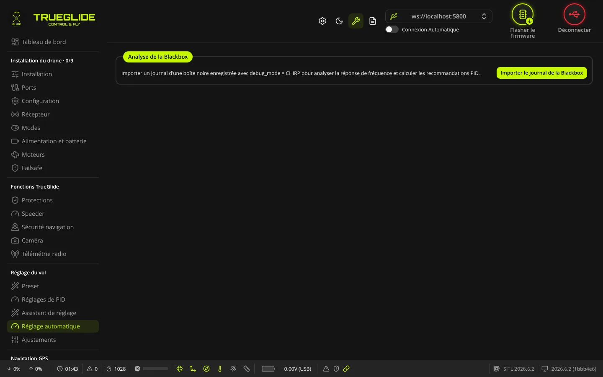
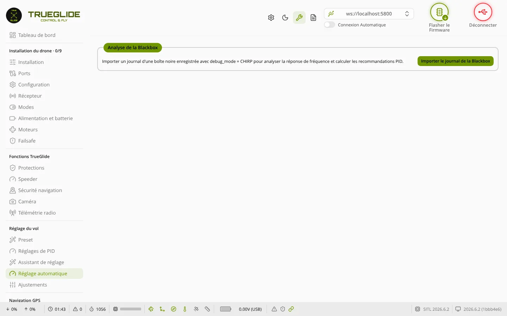

TRUE
TRUERéglage automatique
L'onglet Réglage automatique (groupe « Réglage du vol ») analyse un journal de Blackbox enregistré pendant un vol de mesure « chirp » et propose de nouvelles positions pour les curseurs de réglage PID. Il ne fait pas voler le drone : l'analyse se fait dans le logiciel, après le vol.


Principe
Pendant le vol de mesure, le firmware ajoute à la consigne un signal « chirp » : une oscillation dont la fréquence monte peu à peu, sur un seul axe à la fois. La Blackbox enregistre ce signal et la réponse du gyroscope. Le logiciel compare les deux et en tire la réponse en fréquence du drone, puis des curseurs proposés.
Ce mode de mesure vient de Betaflight 2026.6 ; TRUEGLIDE le garde tel quel. Pour un premier réglage sans vol de mesure, utilisez plutôt l'Assistant de réglage.
Préparer le vol de mesure
- Vérifiez que le mode CHIRP apparaît dans l'onglet Modes. Il n'existe que si le firmware a été construit avec l'option de mesure chirp (
USE_CHIRP). S'il est absent, ce vol de mesure n'est pas possible avec ce firmware. - Mettez le mode CHIRP sur un interrupteur de la radio.
- Dans l'onglet Blackbox, réglez le mode de débogage sur
CHIRP(debug_mode = CHIRP) et vérifiez que l'enregistrement fonctionne. - Les réglages du signal sont dans la CLI (
chirp_*). Valeurs par défaut du firmware : durée 20 s (chirp_time_seconds), fréquence de 0,2 Hz à 600 Hz (chirp_frequency_start_deci_hz = 2,chirp_frequency_end_deci_hz = 6000), amplitude 230 en roulis et en tangage et 180 en lacet. Ne les changez que si vous savez pourquoi.
Faire le vol de mesure
- Décollez, montez à une hauteur sûre et stabilisez le drone.
- Activez l'interrupteur CHIRP et gardez le drone le plus stable possible jusqu'à la fin du signal (durée réglée par
chirp_time_seconds). - Désactivez l'interrupteur. À chaque désactivation, le firmware passe à l'axe suivant : roulis, puis tangage, puis lacet, puis de nouveau roulis.
- Recommencez pour chaque axe à mesurer, puis atterrissez et récupérez le journal de la Blackbox (fichier
.bbl,.bflou.txt).
Cadre Analyse de la Blackbox
- Importer le journal de la Blackbox : choisissez le fichier. L'analyse se fait dans le logiciel ; une roue tourne pendant la lecture, avec l'étape en cours (par exemple « Lecture du journal 1 sur 2... »).
- Si le fichier ne contient pas de données chirp, un message d'erreur s'affiche (« Aucune donnée chirp dans les journaux de ce fichier. », ou « Aucun journal trouvé dans le fichier. ») avec le bouton Essayez encore.
- Après l'analyse, le cadre affiche le Fichier, la Fréquence d'échantillonnage en Hz, les Axes Détectés (Roll, Pitch, Yaw) et le bouton Importer un autre.
Le logiciel prend le premier journal du fichier qui contient des données chirp exploitables. Un axe n'est retenu que si sa mesure est assez longue.
Cadres Réponse en fréquences et Spectrogramme (Gyro)
- Réponse en fréquences : des cases à cocher Roulis (Roll), Tangage (Pitch), Lacet (Yaw) choisissent les axes affichés. Quatre graphiques sont superposés par axe : amplitude (dB) et phase (°) en fonction de la fréquence, sensibilité (dB), et réponse à un échelon (en ms). Les cases servent aussi au tableau des recommandations.
- Spectrogramme (Gyro) : pour chaque axe affiché, l'énergie du gyroscope selon le temps (s) et la fréquence (Hz).
Cadre Recommandation de gain
Un tableau avec une colonne par axe affiché, en trois parties :
- PIDs actuels (à partir du log) : P, I et D lus dans l'en-tête du journal.
- Analyse : Bande passante (Hz), Marge de phase (°), Pic résonnant (dB), Pic de Sensibilité (dB), Dépassement (%), Temps de montée (ms), Temps de stabilisation (ms) et Cohérence (%). Une cohérence basse veut dire que la mesure est peu fiable.
- Curseurs proposés : colonne Actuel (valeur du journal) et une colonne Proposé par axe pour Multiplicateur Master, Gain P / I, Gain I, Gain D, Gain d'anticipation (Feedforward) et Filtre D-Term. L'écart en % est en vert au-delà de +5 %, en rouge en dessous de −5 %. Les valeurs proposées ne dépassent jamais 200 (2,00 sur les curseurs de l'onglet Réglages de PID), la limite du firmware.
Appliquer les gains
- Le logiciel doit être connecté au contrôleur de vol ; sinon le message « Connectez-vous au contrôleur de vol pour appliquer des gains. » s'affiche.
- Si plusieurs axes sont affichés, choisissez dans Appliquer les gains de l'axe l'axe dont les curseurs proposés seront utilisés.
- Cliquez sur Appliquer les gains. Les curseurs proposés sont envoyés au profil PID actif, vérifiés par le firmware, puis sauvegardés. Le message « Gains appliqués et sauvegardés. » confirme.